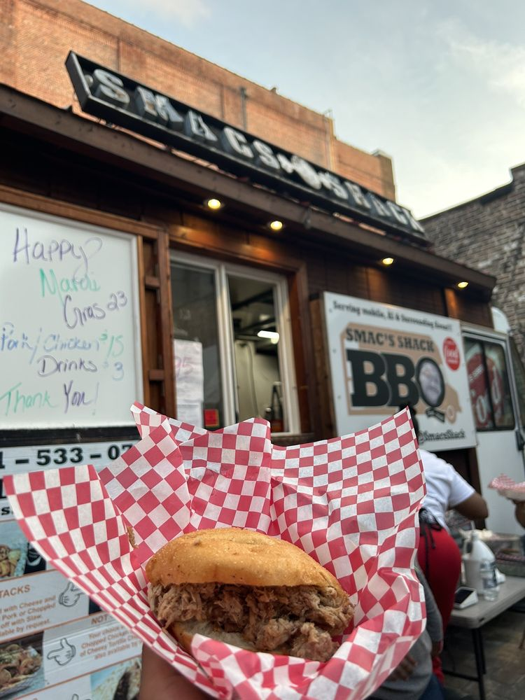

Our story
Waffles to smokeSmac's SmoQ'n Shack is a dream that became a reality on April 8th, 2017. It started off slinging waffles and has evolved into a mobile smoker.
Today the truck is parked at BoxOxt on Dauphin Street in downtown Mobile, serving brisket, pulled pork, chicken nachos, Smackncheese, and the Bangin baguette with chicken out of the window. It also runs catering.
The truck is owned and operated by Artious "Smac" Walker, a Mobile Bay "40 Under 40" honoree who has said his customer interaction is what makes the truck stand out.

Smac's Shack sits at 267 Dauphin St in the BoxOxt container village, open for lunch midweek and late into the night on Fridays and Saturdays. Call (251) 361-6989 to book the truck or ask what is on the smoker.